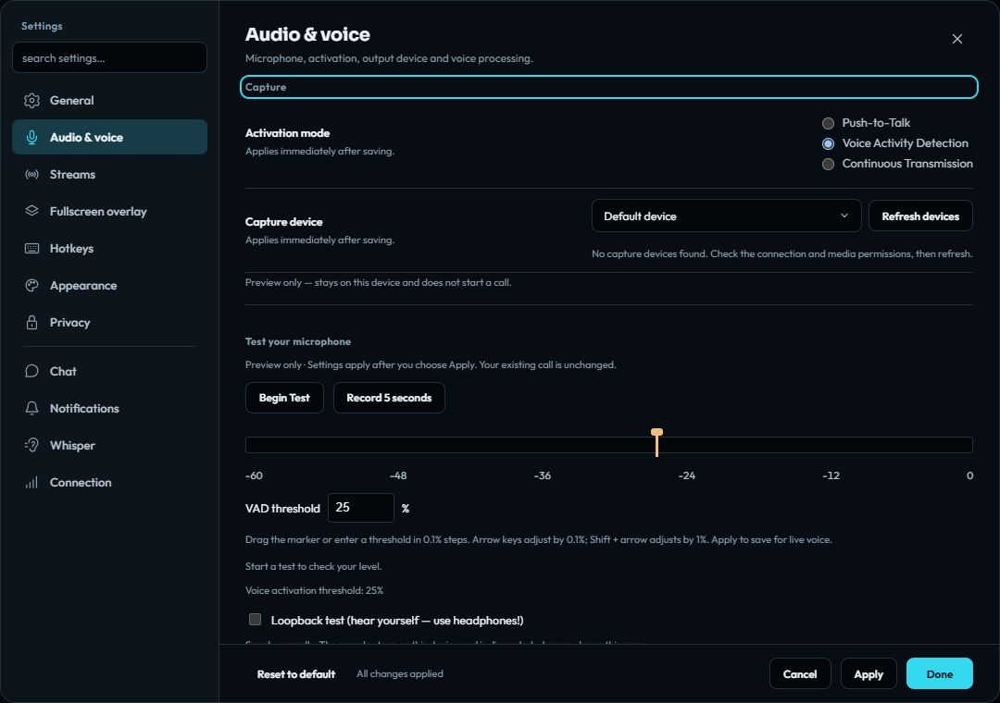
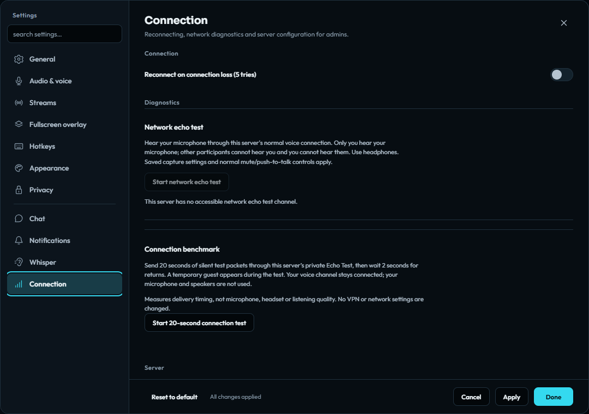

Using noXa · Public alpha
Voice, camera, and screen sharing
Set up your microphone, choose a transmission mode, share a screen, and diagnose a call.
Set up your microphone
- Connect to your community and open Settings → Audio & voice.
- Select the microphone you intend to use and apply the device selection. Choose the playback device for the people you hear.
- Select voice activation, push-to-talk, or continuous transmission. Use the local microphone test before joining a conversation.
- For voice activation, use guided calibration to find a suitable threshold, then check quiet speech and background noise. Adjust the threshold if words are clipped or the microphone opens too easily. Choose Apply or Done to save the microphone, activation, and threshold settings for live voice.
- Join a voice channel you are permitted to view and connect to. Speaking permission is separate from joining permission.
Voice activation keeps a short local pre-roll and release hold to preserve word beginnings and endings. Push-to-talk and continuous transmission use different activation behavior; choose the mode that fits your room and microphone.


Test your connection without an audience
In Settings → Connection → Diagnostics, the network echo test explicitly joins the server’s private Echo Test channel. Wear headphones: you hear your microphone through the normal voice connection. Other participants cannot hear you, and you cannot hear them. Mute and push-to-talk still apply.
Use the return control to restore your previous channel while the test remains active on that server tab. A server operator can disable creation of the echo channel, so its availability depends on the server. On the current encrypted media path, the channel returns your own encrypted media for your device to decrypt.
The separate connection benchmark is unavailable while channel media is end-to-end encrypted, because its test packets would be unencrypted. It is not an alternative to the echo test on this release.


Calls and personal listening controls
Accepted direct and group calls support voice, camera, and screen sharing without moving participants into a channel. The recipient must accept the call before it becomes an active conversation. Private-call media is not end-to-end encrypted; it uses encrypted transport to the server’s relay. This differs from channel media.
In a member’s menu, Personal audio… gives separate voice and screen-share volume and mute controls. These affect your own listening. The 100% level is unity; higher levels amplify the signal and use a limiter for loud peaks.
For video problems, open Stream details. Compare the sender, server, and receiver measurements when available, and follow the health summary’s suggested action. Missing or stale measurements remain unknown; ping alone cannot identify the source of bad playback.
Current channel microphone, camera, screen, and screen-audio frames are end-to-end encrypted. Check the encryption status and key-holder list before sharing. Secure messaging must be ready, the browser must support encoded transforms, and every participating device needs a registered identity. Unsupported encryption blocks media without an unencrypted fallback. Encrypted voice is unavailable while you are invisible, and a channel admits at most 64 participants.
Encrypted channel audio uses Opus. Video can use encrypted H.264 when the sender and active viewers advertise the updated encrypted-codec support; VP8 remains the compatibility option. HEVC is still unavailable for encrypted channel publications. Screen and Studio uploads require runtime-verified hardware encoding: a software encoder or hardware status that cannot be verified stops the stream with an explanation. Starting server recording, whisper, uploaded stream previews, and the connection benchmark remain unavailable. Read the privacy guide for the remaining trust limits, or use Desktop Studio to compose several sources into one channel share.